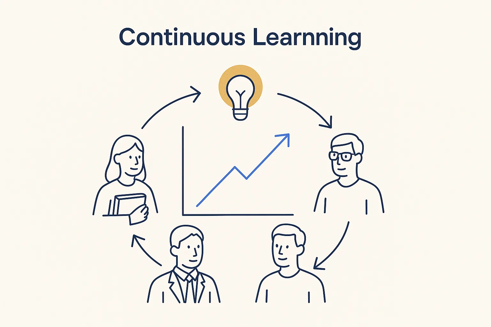

The field changes constantly — new tech, new roles, new methods — so everyone keeps learning: not just the modelers, but the whole team and the stakeholders too.

> The field changes constantly — new tech, new roles, new methods — so everyone keeps learning: not just the modelers, but the whole team and the stakeholders too.
Continuous learning is the concept that is most often forgotten and matters most. The field is not standing still: AI, generative modeling, new platforms, new methods, the shifting role of the architect — the ground moves every few months. A skill set that was current two years ago is already partly stale. So learning cannot be a one-off training you did once; it has to be continuous, built into how the work runs, or you quietly fall behind while feeling busy.
And it is not only the modelers. The whole team has a lot of new things to learn — and so do the stakeholders. People need to learn the new concepts, understand the business model, the glossary and the processes, and get comfortable with using AI and prompt engineering. That is a real curriculum, not a memo. If only the abstract thinkers learn and everyone else stays where they were, the gap between the model and the people who must use it only widens. Bringing the stakeholders along — teaching, not just delivering — is part of the job now.
And we should certainly not depend on sending people to a single training or workshop and expecting everything is then done. It isn’t. A one-off session plants a seed at best; without reinforcement it fades within weeks. Real learning is continuous and embedded in the work — revisited, practiced, and supported day to day — not a box ticked once on a calendar.
Crucially, continuous learning cannot be left to good intentions — it has to be supported by a method and a structure. The same discipline BTM applies to data applies to learning: a structured place for what the team is learning, curated knowledge that compounds instead of scattering, trainings and workshops with a repeatable shape, and AI to help surface and reinforce what matters. Structure is what turns “we should all keep learning” from a slogan into something that actually happens, week after week.
Take it one step further and do the BTM thing: build continuous training into the system, and model the learning itself. Just as we model contracts, deliveries and incidents, we can model the learning — what each person and role needs to know, which concepts and processes are covered, and keep track of knowledge levels over time. When learning is metadata, gaps become visible (“who still needs the new glossary, the new AI workflow?”), onboarding has a defined path, and the training is not a hopeful event but a tracked, improving part of the platform. Model the learning, and you can actually manage it.
This is why the trainings and workshops matter, and why the whole approach leans on a growth mindset. Continuous learning turns the pace of change from a threat into an advantage: the teams that keep learning compound their skill the way structured knowledge compounds. Keep learning, together — it is also, genuinely, part of the fun.
Where it lives: the signature principle of Breakthrough Modeling — everyone keeps learning, because the field never stops moving.